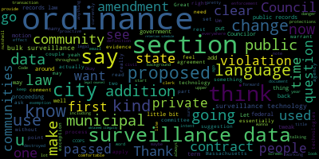
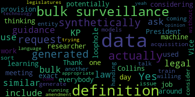
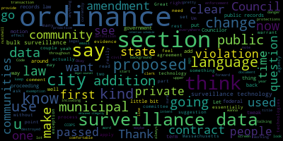
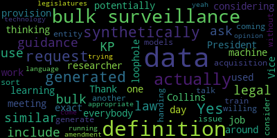

total time: 5.45 minutes
total words: 636

total time: 1.97 minutes
total words: 273
{kind=link}
total time: 18.42 minutes
total words: 3067

{kind=link}
total time: 1.18 minutes
total words: 182
{kind=link}
total time: 2.07 minutes
total words: 222

[Hurtubise]: Test 1-2
[Lazzaro]: this is a meeting of the Medford City Council Public Health and Community Safety Committee. Um, we are meeting tonight. Uh, December 11th 2024. To discuss the some edits to the, um C Cops ordinance. Um, clerk, can you please call the role?
[Hurtubise]: Sure. Council Callahan. Vice President Collins, Councilor Leming, Councilor Tseng.
[Tseng]: Present.
[Hurtubise]: And Chair Lazzaro.
[Lazzaro]: Present. Five present, none absent. The meeting is called to order. I will hand it over to Vice President Collins. Oh, yeah.
[Collins]: Great. Thank you so much, Chair Lazzaro. So I'm the sponsor of these technical amendments to the CCOPS ordinance. I thought I would just start with a little bit of a background. Can folks hear me? Okay, great. Just thought I would start with a little bit of a background on the CCOPS ordinance because this was passed in the previous term. when some members of the Council were not yet part of the Council. So just as a super quick background, this is an ordinance that the City Council worked on between 2022 and 2023. I think it was being workshopped by constituents for a long time before that, but that's when it was on the Council's plate and being worked on in committee. We collaborated with residents, the public health and community safety committee at that time, city staff, the chief of police to create it. And it passed about a year and a half ago, maybe a little bit more now in 2023. So this ordinance stands for community control over public surveillance. In a nutshell, this is a way that provides for local communities to have oversight over what surveillance technologies and data may be used by different branches of their municipal government. It's a structure that is not unique to Medford. It's been passed in a lot of other communities and including other communities in Massachusetts that empower communities through the city council to ask to have an opportunity to ask the questions. Why do we want to use the surveillance technology in our city? To what ends? What are the proposed benefits? What problem is this supposed to solve? Will it cost us how much? What are the possible negative effects? And to be able to ask those questions and have those conversations and weigh those pros and cons. in public transparently. So I think this was a really big win for the community when we passed this last year, because that was the city being proactive and responding to residents who said, hey, we have a privacy and civil liberties concern around these surveillance technologies proliferating. Wow, proliferating. Damn, I gotta stop talking. Responding to this very real perceived danger, because we know the effects that surveillance technologies have, we know the dangers that they pose, we know the dangers that they really have posed in other communities around the U.S. and around the world, and to proactively say, before these take root in our community, let's set up a public, transparent process for us to have that conversation. in public. So that's the CCOPS ordinance. It's been on the books for about a year and a half. And at this point, some community advocates have come forward with ideas for how to strengthen the ordinance. And I also just want to say that it's not unusual for us to do this. It's not unusual for us to go back to an ordinance that either maybe was passed a long time ago or that was a recently added or updated and say now that this has been in play for a little bit, that implementation has shown us some cracks that we can go back and fill. We did this recently. The zoning recodification that was done before I was a part of the council two terms ago. when those zoning tweaks were put into effect, that gave the planning staff the opportunity to say, now that we've put this into practice, now that we're working with this, we've actually noticed a couple of things that we missed, that were misstated, that we should just go back and fix so that this works the way that we mean it to. So this is just part of our legislative process as I see it to say, now that we've got the wheels on this thing, we can see it in motion, we can see what we wanna tweak so that it actually operates the way that we always intended it to. So if I may go on, that brings us to the two suggestions from the community on how to tighten this up. And I am happy to just go through and walk us through those two technical amendments unless other councilors want to cut in first with questions or comments or anything else.
[Lazzaro]: Vice President Collins, would you like to share the portion of the proposed amendments on Zoom or on the screen so that we can? Yes, absolutely. Hang on one sec.
[Collins]: Let me just get my windows in order. All right. Okay, that seems to be working. I also wanna note if folks are looking for the full ordinance, the ordinance that was passed in 2023, that is on Muny Code. It's in the municipal documents section, not in the code of ordinances. That's because we just have a bit of a backlog with getting past ordinances uploaded into Muny Code. So it's up there, it's under municipal documents.
[Lazzaro]: It is also on the website under today's, on today's agenda as part of our packet for tonight, the full ordinance.
[Collins]: Yep. Thank you. Okay. So I'm just going to quickly walk us through the two proposed changes to the ordinance. So the first one, this would be in addition to section 5079, and that's the section that goes over enforcement, remedies, penalties, and whistleblower protections. Actually, let me just quickly scroll up to that section so that we can kind of ground ourselves in context, not going to read the whole thing. But this is the set, this is the ordinance that's currently on the books. So this essentially says who enforces this ordinance. The mayor's office or the mayor's designee edges the case with all of ordinances, essentially. If violations occur. What then, if violations are reported, what then protections for whistleblowers so that people are empowered to speak up if they think the ordinance is being violated? And nothing in this ordinance shall be conscrued to limit or affect any individual's rights under state or federal laws. That's the section currently. The proposed addition reads any video footage or other data recorded or obtained illegally or in violation of this ordinance shall be immediately destroyed and not introduced as evidence in any criminal or civil proceeding, except in those proceedings related to violations of this ordinance. So just to explain that, this proposed tweak is to essentially fix an oversight. The original ordinance in its many sections states how surveillance data may and may not be used, but the penalties are for not adhering to use of surveillance technology or data throughout the ordinance. But what it is silent on is what should happen to surveillance data that is obtained outside the bounds of the ordinance. So this tweak is to say, you know, any surveillance data that is gathered in a way that does not conform to the regulations put forth in the ordinance. If we didn't, for example, if we didn't approve a surveillance technology, that technology went into use anyway. It was used to protect, it was used to collect people's private data. And then we realized that we're like, oh, sorry, that should never have been in use. We never got permission to use that. What happens to that data? Well, it shouldn't be kept around because that could compromise people's privacy. It should be deleted. It should be destroyed. This is kind of, to me, I'm not a lawyer, but this sounds to me like a similar concept to how if an agency were ever to obtain evidence without a warrant, that evidence can't be used because it was obtained illegally. We did pass these proposed amendments to legal prior to this meeting. Legal counsel brought up that some municipal data must be maintained according to public records law. I believe the public records law would supersede this ordinance in any case, but I do have a little bit of extra language to propose just to make that point really clear. I'll pause there.
[Lazzaro]: Councilor Callahan.
[Callahan]: Thank you. Um, clearly this is going to be part of the ordinance. I'm sure that the language is pretty clear based on it being in the ordinance, but it does like on first reading external from the ordinance. there is this question of like, could it be used to say that residents who have their own video footage cannot use it in a criminal investigation for criminal proceeding? I don't know if it's like, that would be a question for a lawyer as to whether to specifically say any video footage or other data recorded or obtained by the city, by a city entity, right? By a municipal entity, illegally or in violation. like just adding in to be very clear that we're only talking about video footage or other data obtained by the city.
[Lazzaro]: Sorry, I'm getting used to the mic system still. Vice President Collins.
[Collins]: Great. Thank you for, yeah, thank you for that point. This is something that I'm glad you brought that up. This is something that we that like understandably was raised when we were going over the ordinance the first time around, because of the you know there's there's ring and nest cameras you know everywhere everywhere everywhere you look people have that kind of technology now. I think we can certainly look at making that clear. I think elsewhere in the ordinance, we took pains to make it clear that we're talking just about surveillance technology that's used by the city, surveillance data collected by the city. And explicitly, this is not about surveillance technology that people might be using. to surveil their own private property on their own private property. So I think that's been made pretty clear. I don't wanna, my only hesitation is if we start adding clarifications in specific sections, I don't want people to then say, oh, so this doesn't affect my nest camera, but what about this other part? That would be my only concern with adding language somewhere in addition to what's kind of at the top of the ordinance.
[Lazzaro]: Similarly, I would assume the whole ordinance would have been run by Council prior to passage previously and So I guess this is a question for Vice President Collins as well, that when that came up, that probably was addressed, or is the assumption that ordinances written by City Council are only applicable to matters that are addressed by our police department, our, you know, city services, our, you know, municipal, only in the realm of municipal services? But, you know, in thinking about this, you think about like our tree ordinance, which does have something to do with private property, to some degree. So, you know, I guess, like, how explicit are we trying to be?
[Collins]: Yeah, I think that's a good question. I feel pretty comfortable that the ordinance throughout is, in the language, very targeted at municipal use of surveillance technology and surveillance data. I'm doing a, as you can see, because I'm still screen sharing, I'm kind of scrolling through the sections, and I feel pretty comfortable with how the language, you know, it's talking about municipal use, Um, so for myself, I don't feel the need to add a disclaimers at this time, but I think it's, um, I'll pass it back to Councilor Callahan.
[Lazzaro]: Councilor Callahan.
[Callahan]: Sorry, just a super quick follow up. Was this previously part of the language that was sent to the legal before? Has this language passed through legal at least once, the stuff we're adding?
[Collins]: Yes. This proposed addition, yeah, all the stuff that we're going to talk about tonight has been reviewed, was reviewed by legal this past week. Yeah. And they had a couple of small amendments that I'll mention as well and can put on the screen.
[Callahan]: I think that makes me feel more comfortable. Yeah. Cool. Thank you.
[Collins]: Thank you. So just while we're on this, while we're on this section, this proposed addition, the comment from legal counsel on this section specifically, which just came in earlier today, was, again, just to many of the comments that we received when we were working on the initial ordinance was to say, we want to make really sure that this comports with state and federal law, to which, to be totally candid, my response is usually, of course it does. State and federal law supersedes city ordinances by definition. But I also don't think that it changes the intent or impact of the city ordinance to add some of the language or version of the language that was proposed, which would be to add to the extent permitted by law, including but not limited to the requirements of the Massachusetts public records law, the municipal records retention schedule, et cetera, any video footage or other data recorded or obtained illegally or in violation of this ordinance shall be immediately destroyed and not introduced as evidence in any criminal or civil proceeding except in those proceedings related to violations of this ordinance. because that's essentially stating what should go without saying, but doesn't because we don't all have GDs. So that would be one addition that I would propose for this, in addition to the addition.
[Lazzaro]: Vice President Collins, can you repeat that one more time? So the clerk has, this is an amendment to the language of the first proposed addition, her legal counsel, and what was that? Can you say it one more time?
[Collins]: Let me see if I can. Or maybe an email. I'll repeat it, and I'll also email it to the clerk. Great. Of course, I can't copy over from a Word document. I will email it to the clerk. The change would be proceeding the language that's on the screen, it would say to the extent permitted by law, including but not limited to the requirements of the Massachusetts public records law and the municipal records retention schedule. And then proceed with that paragraph.
[Lazzaro]: Thank you. Uh, that covers the first section. Do we have any other comments from counselors? About the proposed addition to Section 50 79. Enforcement remedies. Penalties whistleblower protections. Um And I think we should talk about the second section before we talk before we hear from the public. Um, yeah, uh, proposed amendments section 50 80 certain public private transactions. Prohibited Great.
[Collins]: So this change again. Let me scroll up here just so we can Look at the original. Section 5080, well, I mean, it's what we're looking at. This is the entirety of Section 5080 currently. Current title is certain public-private contracts prohibited. Just one paragraph. So my proposed change would be to keep the first section. It shall be unlawful for the city to enter into any contract for monetary value or engage in any financial transaction with a commercial entity that provides the city with the mass acquisition of privately generated and owned bulk surveillance data. Any contracts or agreements signed prior to the enactment of this ordinance that violate the section shall not be renewed after the completion of the term of said contracts or agreements. And then we would strike the following existing line from the ordinance, which reads section 5080 shall not apply to any contract or agreement executed for law enforcement operations or purposes, then we would add the language. Further, it shall be unlawful for the city to acquire or enter into an agreement to acquire or exchange bulk surveillance data that the city is banned from generating on its own with any other government entity or policing agency. It would be also to replace the word contracts in the section title with the word transactions, which is broader. Um, so the proposed change here is to remove that exception. You know, throughout the rest of the ordinance, we say if you're going to use surveillance tech, if you're going to use or procure or sell or do anything with surveillance data, it has to go through this public transparent process where we talk about it before the city council decides this is worth it or this is not worth the potential harms. With this one exception for a carve out for procuring bulk surveillance data where it's commercially available for the purposes of law enforcement. So this tweak is just to remove that one exception and make it coherent with the rest of the ordinance. This is something that I didn't say at the top of this meeting, but it's something that we talked about a lot when we were going through the initial stages of the ordinance, that this policy does not, this policy is about surveillance tech and surveillance data, but it doesn't outright ban or enable any one use or technology. It doesn't single anything out. It just puts forward this public process that should govern all of it. So removing this exemption would just bring that in line with the rest of the ordinance. I also think that kind of bringing this section into the fold and into consistency with the rest of the ordinance is especially topical right now. State and federal courts have not yet landed on the constitutionality for any government agency to purchase surveillance data that was gathered commercially or privately. So in lieu of a ruling on this, in lieu of a precedent on this, communities like Medford have the chance to be proactive and make sure that upper levels of government, any government agency can access their constituents' private personal data without a warrant. Um, and I think that this is especially topical right now, because there are a lot of changes at the federal level. I think it's always a good time to make sure in this, like increasingly increasingly surveilled and digital world that we're doing the best that we can to keep pace with regulations and protections with the incredibly fast pace of technology development. And this is a way for us to be proactive and say we're not going to wait. For these slow moving like upper bureaucracies and upper jurisdictions to weigh in on If our community members' public and private data should be able to be bought and sold and used, we're just going to say, you need a warrant. No exceptions, no carve-outs, you need a warrant. So in a nutshell, there's more to, you know, obviously all this stuff is very nuanced, but in a nutshell, that is the intent behind removing this exemption.
[Lazzaro]: Thank you. Any other councilor comments on this point? Councilor Tseng.
[Tseng]: Thank you. I just, since I'm on Zoom, I wanted to gather my comments. I wanna thank Councilor Collins for these edits and to thank the lawyers and the advocates that she's been liaising with, reaching out to. for these amendments as well. I think they're entirely logical. If you look at the intent of this ordinance, what we're trying to do, what we tried to do as a city council, the edits that are in front of us today make complete sense and are coherent with with those purposes, with that intent. And they're not over overreaching, they're very in line with what you'd expect across municipalities from an ordinance like this. It doesn't only clarify, but it also strengthens those purposes of protecting our civil liberties, of making sure that we're regulating surveillance in the city as well. And it clears up any internal debates, inconsistencies that might've been there before. And as Councilor Collins noted, some of this is stuff that we talked about when we drafted it first, we gave it some time leaning on more on the more conservative side of things, and I think in review over the last year and a bit, I believe, of when this ordinance has been in effect, these changes make a lot of sense. So I'm excited to support them. I hear the questions from my council colleagues. I think that between the suggestions from legal and just how how the rest of the ordinance is written and how it works in Massachusetts state law, I don't think we have to worry that much about those concerns. Thanks.
[Lazzaro]: Thank you, Councilor Tseng. Do we have any other comments from Councilors?
[Collins]: Councilor Collins. Thank you, Chair Lozero. I also just wanted to note another, there were a couple minor points that came back from legal on this proposed change as well. One of them was, again, I think what I characterize as kind of like a, you know, it's dot RIs cross RTs kind of suggestion that noted that the limitations set forward in this section. should not apply to surveillance data that's already exempted from the ordinance. I see the intent behind that language. I do kind of think that goes without saying. I, you know, kind of personal preference, I sometimes think that stating things too many times in too many sections can actually reduce clarity instead of making things more clear. So I'm comfortable with where we have the exemption stated so far in the ordinance. I don't think that that language is necessary. Just to make that more clear, there was a suggestion to say this section does not need to apply to surveillance data that was exempted from the provisions of this ordinance as set forth in section 5071. Section 5071 says this ordinance does not apply to these technologies. I don't think, I feel like if I were to read this ordinance, I would assume that that was true in all sections. So I always appreciate a legal counsel's thoroughness. I'm not myself proposing that as an amendment just because I do think it's unnecessary, but I just wanted to state that for transparency. However, they did note that the term bulk surveillance data is not defined. I think that could be worthwhile. So after we hear from all questions and counselors, I'm sorry, from all questions and comments, I'll make a couple of motions and included in that, I would ask KP Law to provide a suggestion for a definition of bulk surveillance data that we could add to the first section of the ordinance just to keep everything super clear.
[Lazzaro]: Councilor Leming.
[Leming]: Thank you, Vice President. Collins and everybody for all your work on this. I have been thinking for most of this meeting about the exact definition of bulk surveillance data. I would also ask that KP law in considering a definition of bulk surveillance data also include a provision to include data that is synthetically generated to be similar to bulk surveillance data. So in my day job, I'm actually a machine learning researcher and that is one loophole that could potentially be used to get around the acquisition of that sort of bulk data is you could actually train models that could generate data that's similar to bulk data without actually handing the data itself over to another entity. So in coming up with that definition, I would just ask that KP Law consider that. And I'd also be willing to talk to them myself about that. This actually is like an issue that legislatures are running into when they're trying to come up with the appropriate definitions for this technology. So, yeah.
[Lazzaro]: Thank you, Councilor Leming. I think that's a very valid point and something that we should consider including. Do we have any other any further comments from counselors? Shall we move to public comment? Okay, do we have any public comment in the chambers? Please, if you'd like, you can line up at the podium. And anybody on Zoom, you can raise your hand if you'd like to make a comment and I will alternate back and forth. Name and address for the record, please. Can you touch the, there should be, yes, and I will.
[Ingber]: Barry Ingber, 9 Draper Street. And I am a member of Medford People Power, which was the group that initially proposed the CCOPS ordinance and which is asking for the amendment to it. I thank you, Councilor Lazzaro, for holding this meeting, and Vice President Collins for taking the lead on this work. The CCOPS ordinance exists because City Council and Medford residents share a concern and interest around civil liberties, public safety, privacy, transparency in government, and sound decision-making around major financial decisions. It reflects a widespread public opinion that use of surveillance technology should be made public and the government should protect people's privacy. Residents in Medford spent over four years working on this to get this ordinance passed and gained the endorsement of a wide range of community organizations, institutions, and faith communities. While the passage of the ordinance in early 2023 was a great victory, a loophole remains which has been discussed regarding the city's potential purchase of commercially available surveillance data. This type of contract potentially threatens both accountability and civil liberties. We strongly encourage the city of the City Council to restore the language that we originally had in Section 5080 that included the Medford Police Department along with all other city departments as prohibited from purchasing bulk surveillance data or exchanging it. And might I suggest that in looking for a definition of bulk surveillance data that you also go to the ACLU of Massachusetts and because they are expert in this and KP Law for all its strengths is probably not on the cutting edge of this stuff. We want to make sure our tax dollars are being spent going towards true public safety and not on expensive gadgets and software that enriches corporations more than they actually help us. Thank you again.
[Lazzaro]: Thank you. I'm going to go to Zoom. David Harris, please state your name and address for the record.
[Harris]: Yes, David Harris, 151 Sharon Street, West Medford. And thank you so much for this opportunity and thank you to the council for considering this. I'm gonna speak briefly tonight on behalf of the language under consideration, which I think aligns the city's policies surrounding the use of technology with our shared sense of community and justice. I do so having already provided my thoughts in previous sessions, but as I noted in both sets of comments, I thought there may still be some wrinkles to iron out. And I think that this is an example of the council really showing incredible leadership in trying to think through how to work out those wrinkles. I think I had thought one of these wrinkles didn't exist when we first started, but I'm glad to see that it's being addressed now. I'm not gonna say any more except, you know, I think as we consider ways to kind of reaffirm ourselves as a welcoming city, I think adopting this simple common sense language is kind of a concrete affirmation that we consider all residents of Medford neither commodified data points nor prey, but neighbors. I applaud the council for revisiting the ordinance and continuing to protect us from the known and unknown dangers of unfettered surveillance and data accumulation. That's it for me. I really do appreciate it, and thank you for the opportunity, and I encourage you to adopt this language as amended.
[Lazzaro]: Thank you. We'll go back to the podium. Name and address for the record, please.
[Zotter]: I'm Jean Zotter. 36 Saunders street. I want to thank the council for considering these technical amendments and counselor Collins for putting them forth. I'm going to speak particularly to section 50 79. That amendment, which is about data that is obtained contrary to a surveillance use policy. So the CCOPS ordinance sets up a system where if the city wants to use surveillance technology, they seek city council approval. They say how they're going to use it through their surveillance use policy, which you would then approve. So if they go outside of the policy that you've approved, then that's when this section kicks in. And basically, I feel like it sets up a system of transparency with residents so that we know the city's adhering to the commitments they've made in their surveillance use policy and also holds the city accountable if they don't follow the policy they said they were going to follow. So basically, that's what I wanted to say. I wanted to thank you both. Thank you all for considering these amendments. And I fully support them.
[Lazzaro]: Thank you. Seeing no more hands on Zoom, we have one more at the podium. Name and address for the record, please.
[Yanko]: Thank you. My name is Jennifer Yanko, and I live at 16 Monument Street in West Medford. I want to thank Councilor Collins for bringing this forward and for the work that you've all been doing on the amendments and on this ordinance. I think it's really important to realize that I'm repeating what other people have said, but I think it's important to underline that As much as many of us may be alarmed by the rapid development of surveillance technologies, this is not precluding the use of such technologies. It's simply making sure that we as residents of the city, through our city council, are able to know what's going on and to some extent control it. I am a member of the NAACP, the Mystic Valley branch, and we have been following this CCOPS ordinance and have had people come and speak to our branch about it, and we very much support it. Part of that reason is because we recognize that racism is a public health threat. And this ordinance is a concrete thing that Medford can do to address racism. As we know, surveillance has historically been used against communities of color. It's been used against Muslim communities. It's been used against immigrants. It's been used against activists. The technology is vastly underregulated. rapidly evolving and built in such a way that it's difficult for municipalities to use it fairly. So that's why we need this kind of regulation. And we really, on behalf of the branch, I want to thank the council for considering this and assure you of our full support. This is a personal comment that comes from hearing the issue of bulk data being raised. I think that's really critical because we're not only talking about the city purchasing and using surveillance technologies, but perhaps even more importantly, the possibility of purchasing bulk data. So thank you very much.
[Lazzaro]: Thank you. I see one more hand on Zoom. ask you to unmute and please state your name and address for the record.
[Epstein]: I'm sorry, turn on my camera too. My name is Ellen Epstein. I live at 15 Grove Street and I'll be brief. I just really want to thank the members of this committee and the people who've been working on this ordinance for being proactive and not waiting until an infringement occurs. I'm a member of Safe Medford and I can state unequivocally that we all feel that this is important, an important safety move. for everyone in our community. So thanks to the members of this committee for bringing it forward and for thinking so carefully about the wording. And thank you. That's it.
[Lazzaro]: Thank you. Seeing no further public participation, are there any motions on the floor, Vice President Collins?
[Collins]: Thank you. I would motion to incorporate the discussed amendments. And I just emailed those to the clerk, that would be the addition to section 5079 with the new first sentence that we discussed in committee pertaining to Massachusetts public records law and municipal records and retention schedule. and in Section 5080 to change the title to say transactions instead of contracts, and to make those line item changes to Section 5080, as well as to request guidance on a definition for the term bulk surveillance data. And then I don't want to state Councilor Leming's motion for him, but pending that, I would also motion to incorporate those amendments and report this out of committee.
[Lazzaro]: On Vice President Collins' various motions, seconded by Councilor Callahan.
[Hurtubise]: Clerk, can you call the roll when you're ready?
[Lazzaro]: Councilor Leming, do you have a separate motion to make?
[Leming]: request guidance on language for... Yes, an amendment to that is to request legal guidance on the use of synthetically generated data in the definition of bulk surveillance data.
[Hurtubise]: To request a legal opinion on the use of bulk data?
[Leming]: Request legal opinion on the use of synthetically generated data in our definition of bulk surveillance data.
[Hurtubise]: I included that as one motion. I'm cool with it too. We have a second from Councilor Callahan. The roll call. Councilor Callahan. Vice President Collins.
[Collins]: Yes.
[Hurtubise]: Councilor Leming.
[Leming]: Yes.
[Hurtubise]: Councilor Tseng.
[Tseng]: Yes.
[Hurtubise]: Chair Lazzaro.
[Lazzaro]: Yes. Five in the affirmative, none in the negative. The motion passes. Thank you. Are there any other motions on the floor? on the motion of Councilor Callahan, seconded by Councilor Leming to adjourn. Clerk, can you call the roll, please? When you have a chance.
[Hurtubise]: Councilor Callahan? Vice President Collins? Councilor Leming?
[Leming]: Yes.
[Hurtubise]: Councilor Tseng?
[Tseng]: Yes.
[Hurtubise]: Chair Lazzaro?
[Lazzaro]: Yes.
|
total time: 5.45 minutes total words: 636 |
total time: 1.97 minutes total words: 273 |
total time: 18.42 minutes total words: 3067  |
total time: 1.18 minutes total words: 182 |
|
total time: 2.07 minutes total words: 222  |
|||
{kind=link}